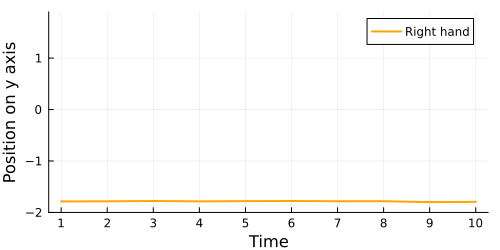

Getting started
In this introductory section, you will learn about the main building blocks of ModalAssociationRules.jl. Also, if a good picture about association rule mining (ARM, from now onwards) is given during the documentation, to make the most out of this guide, we suggest reading the following articles:
The above introduces two important algorithms, which are also built into this package. Moreover, the latter one is the state-of-the-art in the field of ARM.
Further on in the documentation, the potential of ModalAssociationRules.jl will emerge: this package's raison d'être is to generalize the already existing ARM algorithms to modal logics, which are more expressive than propositional ones (as it allows to reason in terms of relational data) and computationally less expensive than first-order logic. If you are new to Sole.jl and you want to learn more about modal logic, please have a look at SoleLogics.jl for a general overview on the topic, or follow this documentation and return to the link if needed.
Fast introduction
Consider a time series dataset. For example, let us consider the NATOPS dataset, obtained by recording the movement of different body parts of an operator. We are interested in extracting temporal considerations hidden in the data. To do so, we can highlight specific intervals in each time series (we assume every signal to have the same length). For example, consider the following time series encoding the vertical trajectory of the right hand of an operator.
Now, we can highlight different intervals on the signal. For example, via windowing:
 


At this point, we can define a set of logical facts (Items in the jargon) to express a particular property of each interval. We are interested in extracting complex associations hidden in data. In this case, we need a logical formalism capable of capturing temporal relations between different intervals. In particular, HS Interval Logic comes in handy to establish relations such as "the item p holds on the interval X, while the item q holds on the interval Y, and Y comes after X".
What we want to do, in general, is to extend propositional logic with a specific modal logic formalism (hence, the name of this package) that lets us reason in terms of dimensional relations in data while, at the same time, is not as computationally expensive as first order logic.
To provide you with a more concrete example, consider the following two items, called p and q. We define them as if we were in the Julia REPL.
# ScalarCondition is a "generic comparison strategy" defined in SoleData.jl; it says that the maximum in an object encoding a piece of the first variable (in the example above, the right hand vertical movement) must be greater than the threshold 0.5.
# Atom is a wrapper provided by SoleLogics.jl, to later establish the truth value of a structure.
p = ScalarCondition(VariableMin(1), <, -1.0) |> Atom
# This fact is true on the intervals [1:10] and [11:20] in the example above.
q = ScalarCondition(VariableMax(1), >=, 0.0) |> Atom
# IA_A is the After relation of Allen's interval algebra; "diamond" is one of two modalities (the other one is called "box"); we can ignore it for simplicity here.
ap = diamond(IA_A)(p)
alphabet = [p,q,ap]Note that the example provided, although concrete, is still a toy example as each interval is completely flattened to just one scalar value. In practice, we would like to deal with more expressive kinds of ScalarCondition.
Now that we have arranged an alphabet of items, we want to establish which items co-occur together by computing the relative frequency of every possible combination of items (this is the most naive mining strategy, but, at the moment, let us forget about performance). Item combinations are called itemsets, and the relative frequency of how many times an itemset is true within the data is typically called support.
| Itemset | [1:10] | [11:20] | [21:30] | [31:40] | [41:50] | Support |
|---|---|---|---|---|---|---|
| [p] | true | true | true | true | 4/5 | |
| [q] | true | true | true | 3/5 | ||
| [ap] | true | true | true | 3/5 | ||
| [p,ap] | true | true | 2/5 | |||
| [q,ap] | true | true | 2/5 | |||
| [p,q,ap] | 0/5 |
Note that the relative frequency decreases as the itemset we consider gets bigger. Also, note how the after operator in ap shifts the truth values of p one space to the left in the table; in this sense, a temporal declination of a fact is simply a special mask of bits obtained by the fact itself.
Let us say that we want to consider the itemset [p,ap] to be frequent, that is, we consider its support to be high enough. The support for an itemset could be very high because it expresses a triviality, so we want to further process the itemset and better analyze it via specific meaningfulness measures.
In particular, we could consider the two rules [p] => [ap] and [ap] => [p]. If they turn out to be meaningful to us, then we call such rules association rules.
The high-level pipeline we described should be useful to proceed with reading the rest of the documentation.
Core definitions
One Item is just a logical formula, which can be interpreted by a certain model. At the moment, here, we don't care about how models are represented by Sole.jl under the hood, or how the checking algorithm works: what matters is that Items are manipulated by ARM algorithms, which try to find which conjunctions between items are most statistically significant.
ModalAssociationRules.Item — Typestruct Item{F<:SoleLogics.Formula}
formula::F
endFundamental type in the context of association rule mining.
The name Item comes from the classical association rule mining jargon, but it is simply a wrapper around a logical formula, whose truth value can be checked on a model. To know more about logical formulas, see SoleLogics.Formula.
See also ARule, gconfidence, Itemset, MeaningfulnessMeasure, SoleLogics.Formula.
ModalAssociationRules.Itemset — Typeconst Itemset{I<:Item} = Vector{I}Vector collecting multiple Items.
Semantically, Itemsets represent Items (that is, formulas) conjunctions.
In the context of association rule mining, interesting itemsets are manipulated to discover interesting relations between Items, in the form of association rules (ARule).
Interestingness is established through a set of MeaningfulnessMeasure.
Details
Itemsets are implemented as a vector for two reasons:
lookup is faster when the collection is small (an itemset is unlikely to consist of more than 100 items);
most of the time, we want to keep an ordering between items while searching for interesting itemsets.
Examples
julia> p = ScalarCondition(VariableMin(1), >, 1.0) |> Atom |> Item
min[V1] > 1.0
julia> q = ScalarCondition(VariableMin(2), >=, 0.0) |> Atom |> Item
min[V2] ≥ 0.0
julia> pq = Itemset([p,q])
julia> qp = Itemset([q,p])
julia> pq == qp
true
julia> pq === qp
false
julia> r = ScalarCondition(VariableMax(3), <=, 2.0) |> Atom |> Item
max[V3] ≤ 2.0
julia> pqr = [pq; r];
julia> pq in pqr
true
julia> formula(pqr) |> syntaxstring
"(min[V1] > 1.0) ∧ (min[V2] ≥ 0.0) ∧ (max[V3] ≤ 2.0)"See also ARule, formula, gsupport, Item, lsupport, MeaningfulnessMeasure.
Notice that one Itemset could be a set, but actually it is a vector: this is because keeping an ordering between items is always computationally beneficial to ARM algorithms. To convert an Itemset in its conjunctive normal form we simply call formula.
ModalAssociationRules.formula — Functionformula(item::Item{F}) where {F}See also Item, SoleLogics.Formula.
formula(itemset::Itemset)::SoleLogics.LeftmostConjunctiveFormConjunctive normal form of the Items contained in itemset.
See also Item, Itemset, SoleLogics.LeftmostConjunctiveForm
In general, an Itemset behaves exactly like you would expect a Vector{Item} would do. At the end of the day, the only difference is that manipulating an Itemset, for example, through push! or union, guarantees the wrapped items always keep the same sorting.
Enough about Itemsets. Our final goal is to produce association rules.
ModalAssociationRules.ARule — Typeconst ARule = Tuple{Itemset,Itemset}An association rule represents a frequent and meaningful co-occurrence relationship of the form "X ⇒ Y", between two Itemsets X and Y, where X ∩ Y = ∅, respectively called antecedent and consequent.
Extracting all the ARule "hidden" in the data is the main purpose of association rule mining (ARM).
Given an itemset Z containing atleast two Items (|Z| ≥ 2), it can be partitioned in two (sub)itemsets X and Y; trying all the possible binary partitioning of Z is a systematic way to generate ARules.
The general framework always followed by ARM techniques is to, firstly, generate all the frequent itemsets considering a set of MeaningfulnessMeasure specifically tailored to work with Itemsets.
Thereafter, all the association rules are generated by testing all the combinations of frequent itemsets against another set of MeaningfulnessMeasure, this time designed to capture how interesting a rule is.
See also antecedent, consequent, gconfidence, Itemset, lconfidence, MeaningfulnessMeasure.
ModalAssociationRules.content — Methodcontent(rule::ARule)::Tuple{Itemset,Itemset}Getter for the content of an ARule, that is, both its antecedent and its consequent.
See also antecedent, ARule, consequent, Itemset.
ModalAssociationRules.antecedent — MethodModalAssociationRules.consequent — MethodA rich print for ARule is provided by the following utility:
ModalAssociationRules.arule_analysis — Methodarule_analysis(arule::ARule, miner::Miner; io::IO=stdout, localities=false)See also arule_analysis(::Arule, ::AbstractMiner), ARule, Miner.
Sometimes we could be interested in writing a function that considers a generic entity obtained through an association rule mining algorithm (frequent itemsets and, of course, association rules). Think about a dictionary mapping some extracted pattern to metadata. We call that generic entity "an ARM subject", and the following union type comes in handy.
ModalAssociationRules.ARMSubject — TypeARMSubject = Union{ARule,Itemset}Each entity mined through an association rule mining algorithm.
See also ARule, GmeasMemo, GmeasMemoKey, Itemset, LmeasMemo, LmeasMemoKey.
Measures
To establish when an ARMSubject is interesting, we need meaningfulness measures.
ModalAssociationRules.Threshold — Typeconst Threshold = Float64Threshold value type for MeaningfulnessMeasures.
See also gconfidence, gsupport, lconfidence, lsupport, MeaningfulnessMeasure.
ModalAssociationRules.MeaningfulnessMeasure — Typeconst MeaningfulnessMeasure = Tuple{Function, Threshold, Threshold}To fully understand this description, we suggest reading this article.
In the classic propositional case scenario, we can think each instance as a propositional interpretation, or equivalently, as a Kripke frame containing only one world. In this setting, a meaningfulness measure indicates how many times a specific property of an Itemset (or an ARule) is satisfied.
The most important meaningfulness measure is support, defined as "the number of instances in a dataset that satisfy an itemset" (it is defined similarly for association rules, where we consider the itemset obtained by combining both rule's antecedent and consequent). Other meaningfulness measures can be defined in function of support.
In the context of modal logic, where the instances of a dataset are relational objects called Kripke frames, every meaningfulness measure must capture two aspects: how much an Itemset or an ARule is meaningful within an instance, and how much the same object is meaningful across all the instances, that is, how many times it resulted meaningful within an instance. Note that those two aspects coincide in the propositional scenario.
When a meaningfulness measure is applied locally within an instance, it is said to be "local". Otherwise, it is said to be "global". For example, local support is defined as "the number of worlds within an instance, which satisfy an itemset". To define global support we need to define a minimum local support threshold sl which is a real number between 0 and 1. Now, we can say that global support is "the number of instances for which local support overpassed the minimum local support threshold".
As in the propositional setting, more meaningfulness measures can be defined starting from support, but now they must respect the local/global dichotomy.
We now have all the ingredients to understand this type definition. A MeaningfulnessMeasure is a tuple composed of a global meaningfulness measure, a local threshold used internally, and a global threshold we would like our itemsets (rules) to overpass.
See also gconfidence, gsupport, lsupport, lconfidence.
What follows is a list of the already built-in meaningfulness measures. In the Hands on section you will learn how to implement your own measure leveraging memoization optimization via a simple macro.
ModalAssociationRules.lsupport — Functionfunction lsupport(
itemset::Itemset,
instance::LogicalInstance;
miner::Union{Nothing,AbstractMiner}=nothing
)::Float64Compute the local support for the given itemset in the given instance.
Local support is the ratio between the number of worlds in a LogicalInstance where and Itemset is true and the total number of worlds where the Itemset can be checked.
See also SoleLogics.check, Miner, gsupport, LogicalInstance, Itemset, Threshold.
ModalAssociationRules.gsupport — Functionfunction gsupport(
itemset::Itemset,
X::SupportedLogiset,
threshold::Threshold;
miner::Union{Nothing,AbstractMiner}=nothing
)::Float64Compute the global support for the given itemset on a logiset X, considering threshold as the threshold for the local support called internally.
Global support is the ratio between the number of LogicalInstances in a SupportedLogiset for which the local support, lsupport, is greater than a Threshold, and the total number of instances in the same logiset.
If a miner is provided, then its internal state is updated and used to leverage memoization.
See also Miner, lsupport, LogicalInstance, Itemset, SupportedLogiset, Threshold.
ModalAssociationRules.lconfidence — Functionfunction lconfidence(
rule::ARule,
ith_instance::LogicalInstance;
miner::Union{Nothing,AbstractMiner}=nothing
)::Float64Compute the local confidence for the given rule.
Local confidence is the ratio between lsupport of an ARule on a LogicalInstance and the lsupport of the antecedent of the same rule.
If a miner is provided, then its internal state is updated and used to leverage memoization.
See also AbstractMiner, antecedent, ARule, LogicalInstance, lsupport, Threshold.
ModalAssociationRules.gconfidence — Functionfunction gconfidence(
rule::ARule,
X::SupportedLogiset,
threshold::Threshold;
miner::Union{Nothing,AbstractMiner}=nothing
)::Float64Compute the global confidence for the given rule on a logiset X, considering threshold as the threshold for the global support called internally.
Global confidence is the ratio between gsupport of an ARule on a SupportedLogiset and the gsupport of the only antecedent of the same rule.
If a miner is provided, then its internal state is updated and used to leverage memoization.
See also antecedent, ARule, AbstractMiner, gsupport, SupportedLogiset.
The measures above are explained in more detail in the Modal generalization section, together with more sophisticated ones. For now, all you need to understand is that lsupport and gsupport compute how many times an itemset is true, while the "confidence" counterpart measures how many times an itemset is true, given the fact that another one is currently true.
Measures are stored in ad-hoc shaped data structures.
ModalAssociationRules.LmeasMemoKey — Typeconst LmeasMemoKey = Tuple{Symbol,ARMSubject,Integer}Key of a LmeasMemo dictionary. Represents a local meaningfulness measure name (as a Symbol), a ARMSubject, and the number of a dataset instance where the measure is applied.
See also ARMSubject, LmeasMemo, lsupport, lconfidence.
ModalAssociationRules.LmeasMemo — Typeconst LmeasMemo = Dict{LmeasMemoKey,Threshold}Association between a local measure of a ARMSubject on a specific dataset instance, and its value.
See also ARMSubject, LmeasMemo, lsupport, lconfidence.
ModalAssociationRules.GmeasMemoKey — Typeconst GmeasMemoKey = Tuple{Symbol,ARMSubject}Key of a GmeasMemo dictionary. Represents a global meaningfulness measure name (as a Symbol) and a ARMSubject.
See also ARMSubject, GmeasMemo, gconfidence, gsupport.
ModalAssociationRules.GmeasMemo — Typeconst GmeasMemo = Dict{GmeasMemoKey,Threshold}Association between a global measure of a ARMSubject on a dataset, and its value.
The reference to the dataset is not explicited here, since GmeasMemo is intended to be used as a memoization structure inside Miner objects, and the latter already knows the dataset they are working with.
See also GmeasMemoKey, ARMSubject.
Mining structures
Finally, we are ready to start mining. To do so, we must implement an AbstractMiner.
ModalAssociationRules.AbstractMiner — TypeAny entity capable of perform association rule mining.
Interface
Each new concrete miner structure must define the following getters and setters. Actually, depending on its purposes, a structure may partially implement these dispatches. For example, Miner does completely implement the interface while Bulldozer does not.
data(miner::AbstractMiner)
items(miner::AbstractMiner)
algorithm(miner::AbstractMiner)
freqitems(miner::AbstractMiner)
arules(miner::AbstractMiner)
itemsetmeasures(miner::AbstractMiner)
arulemeasures(miner::AbstractMiner)
localmemo(miner::AbstractMiner)
localmemo!(miner::AbstractMiner)
globalmemo(miner::AbstractMiner)
globalmemo!(miner::AbstractMiner)
worldfilter(miner::AbstractMiner)
itemset_policies(miner::AbstractMiner)
arule_policies(miner::AbstractMiner)
miningstate(miner::AbstractMiner)
miningstate!(miner::AbstractMiner)
info(miner::AbstractMiner)
The main implementation of an AbstractMiner's an interface is embodied by the Miner structure. At the moment of writing, all the experiments written with this package are implemented using the latter.
To mine using a Miner, we just need to specify which dataset we are working with, together with a mining function, a vector of initial Items, and the MeaningfulnessMeasures to establish ARMSubject interestingness.
ModalAssociationRules.Miner — Typestruct Miner{
D<:MineableData,
I<:Item
} <: AbstractMiner
X::D # target dataset
algorithm::Function # algorithm used to perform extraction
items::Vector{I} # alphabet
# meaningfulness measures
itemset_constrained_measures::Vector{<:MeaningfulnessMeasure}
arule_constrained_measures::Vector{<:MeaningfulnessMeasure}
freqitems::Vector{Itemset} # collected frequent itemsets
arules::Vector{ARule} # collected association rules
localmemo::LmeasMemo # local memoization structure
globalmemo::GmeasMemo # global memoization structure
worldfilter::Union{Nothing,WorldFilter} # metarules about world filterings
itemset_policies::Vector{<:Function} # metarules about itemsets mining
arule_policies::Vector{<:Function} # metarules about arules mining
miningstate::MiningState # mining algorithm miningstate (see documentation)
info::Info # general informations
# locks on memoization and miningstate structures
lmemolock::ReentrantLock
gmemolock::ReentrantLock
miningstatelock::ReentrantLock
endConcrete AbstractMiner containing both the data, the logic and the parameterization to perform association rule mining in the modal setting.
Examples
julia> using ModalAssociationRules
julia> using SoleData
# Load NATOPS DataFrame
julia> X_df, y = load_NATOPS();
# Convert NATOPS DataFrame to a Logiset
julia> X = scalarlogiset(X_df)
# Prepare some propositional atoms
julia> p = Atom(ScalarCondition(VariableMin(1), >, -0.5))
julia> q = Atom(ScalarCondition(VariableMin(2), <=, -2.2))
julia> r = Atom(ScalarCondition(VariableMin(3), >, -3.6))
# Prepare modal atoms using later relationship - see [`SoleLogics.IntervalRelation`](@ref))
julia> lp = box(IA_L)(p)
julia> lq = diamond(IA_L)(q)
julia> lr = box(IA_L)(r)
# Compose a vector of items, regrouping the atoms defined before
julia> my_alphabet = Vector{Item}([p, q, r, lp, lq, lr])
# Establish which meaningfulness measures you want to define the notion of itemset and
# association rule holding on an instance and on a modal dataset
julia> my_itemsetmeasures = [(gsupport, 0.1, 0.1)]
julia> my_rulemeasures = [(gconfidence, 0.1, 0.1)]
# (optional) Establish a filter to iterate the worlds in a generic modal instance
julia> my_worldfilter = SoleLogics.FunctionalWorldFilter(
x -> length(x) >= 3 && length(x) <= 10, Interval{Int}
)
# (optional) Establish a policy to further restrict itemsets that can be considered frequent
julia> my_itemset_policies = [islimited_length_itemset()]
# (optional) Establish a policy to further restrict rules that can be considered
# association rules
julia> my_arule_policies = [
islimited_length_arule(), isanchored_arule(), isheterogeneous_arule()
]
# Create an association rule miner wrapping `fpgrowth` algorithm - see [`fpgrowth`](@ref);
julia> miner = Miner(X, fpgrowth, my_alphabet,
my_itemsetmeasures, my_rulemeasures,
worldfilter=my_worldfilter,
itemset_policies=my_itemset_policies,
arule_policies=my_arule_policies
)
# We mine using mine!
# (optional) We could pass kwargs to forward them to the mining algorithm
julia> mine!(miner)
# Print all the mined association rules
julia> for arule in generaterules(miner)
println(arule)
endSee also ARule, Bulldozer, MeaningfulnessMeasure, Info, isanchored_arule, isheterogeneous_arule, islimited_length_arule(), islimited_length_itemset(), Item, Itemset, GmeasMemo, LmeasMemo, MiningState, SoleLogics.WorldFilter.
Let us see which getters and setters are available for Miner.
ModalAssociationRules.data — Methoddata(miner::Miner)::MineableDataModalAssociationRules.algorithm — Methodalgorithm(miner::Miner)::FunctionModalAssociationRules.items — Methoditems(miner::Miner)ModalAssociationRules.measures — Methodmeasures(miner::AbstractMiner)::Vector{<:MeaningfulnessMeasure}Return all the MeaningfulnessMeasures wrapped by miner.
See also AbstractMiner, itemsetmeasures, MeaningfulnessMeasure, arulemeasures.
ModalAssociationRules.findmeasure — Methodfindmeasure(
miner::AbstractMiner,
meas::Function;
recognizer::Function=islocalof
)::MeaningfulnessMeasureRetrieve the MeaningfulnessMeasure associated with meas within miner.
See also isglobalof, islocalof, MeaningfulnessMeasure, AbstractMiner.
ModalAssociationRules.itemsetmeasures — Methoditemsetmeasures(miner::Miner)::Vector{<:MeaningfulnessMeasure}See [itemsetmeasures(::AbstractMiner)]
ModalAssociationRules.arulemeasures — Methodarulemeasures(miner::Miner)::Vector{<:MeaningfulnessMeasure}
ModalAssociationRules.getlocalthreshold — Methodgetlocalthreshold(miner::AbstractMiner, meas::Function)::ThresholdGetter for the Threshold associated with the function wrapped by some MeaningfulnessMeasure tailored to work locally (that is, analyzing "the inside" of a dataset's instances) in miner.
ModalAssociationRules.getglobalthreshold — Methodgetglobalthreshold(miner::AbstractMiner, meas::Function)::ThresholdGetter for the Threshold associated with the function wrapped by some MeaningfulnessMeasure tailored to work globally (that is, measuring the behavior of a specific local-measure across all dataset's instances) in miner.
After a Miner ends mining (we will see how to mine in a second), frequent Itemsets and ARule are accessible through the getters below.
ModalAssociationRules.freqitems — Methodfreqitems(miner::Miner)ModalAssociationRules.arules — Methodarules(miner::Miner) See arules(::AbstractMiner).
To start the mining algorithm, simply call the following:
ModalAssociationRules.mine! — Methodmine!(miner::AbstractMiner; kwargs...)Synonym for `apply!.
The mining call returns an ARule generator. Since the extracted rules could be an exponential number, the rule generation phase is separated from the mining itself (for example, you might be interested in serializing the miner object and continuing the rules enumeration later).
ModalAssociationRules.generaterules! — Methodgeneraterules!(miner::Miner)During both the mining and the rules generation phases, the values returned by MeaningfulnessMeasure applied on a certain ARMSubject are saved inside the Miner. Thanks to the methods hereafter, a Miner can avoid useless recomputations.
ModalAssociationRules.localmemo — Methodlocalmemo(miner::Miner)::LmeasMemo
ModalAssociationRules.localmemo! — Methodlocalmemo!(miner::Miner, key::LmeasMemoKey, val::Threshold)Setter for a specific entry key inside the local memoization structure wrapped by miner.
See also Miner, LmeasMemo, LmeasMemoKey.
ModalAssociationRules.globalmemo — Methodglobalmemo(miner::Miner)::GmeasMemo
ModalAssociationRules.globalmemo! — Methodglobalmemo!(miner::Miner, key::GmeasMemoKey, val::Threshold)Setter for a specific entry key inside the global memoization structure wrapped by miner.
See also Miner, GmeasMemo, GmeasMemoKey.
Miner customization
A Miner also contains two fields to keep additional information, those are info and miningstate.
The info field in Miner is a dictionary used to store extra information about the miner, such as statistics about mining. Currently, since the package is still being developed, the info field only contains a flag indicating whether the miner has been used for mining or not.
ModalAssociationRules.Info — Typeconst Info = Dict{Symbol,Any}Storage reserved to metadata about mining (e.g., execution time).
ModalAssociationRules.info — Methodinfo(miner::Miner)::Info = miner.infoGetter for miner's structure holding meta informations about mining.
See also Miner.
ModalAssociationRules.info! — MethodModalAssociationRules.hasinfo — Methodhasinfo(miner::AbstractMiner, key::Symbol)Return whether miner additional informations field contains an entry key.
See also AbstractMiner.
When writing your own mining algorithm, or when mining with a particular kind of dataset, you might need to specialize the Miner, keeping, for example, custom metadata and data structures. To specialize a Miner, you can fill a MiningState structure to fit your needs.
ModalAssociationRules.MiningState — Typeconst MiningState = Dict{Symbol,Any}Additional informations associated with an ARMSubject that can be used to specialize any concrete type deriving from AbstractMiner, thus augmenting its capabilities.
To understand how to specialize a Miner, see hasminingstate, initminingstate, 'miningstate`, miningstate!.
ModalAssociationRules.miningstate — Methodminingstate(miner::Miner)
ModalAssociationRules.miningstate! — Methodminingstate!(miner::Miner, key::Symbol, val)Setter for the content of a specific field of miner's miningstate.
See also Miner, hasminingstate, initminingstate, MiningState.
ModalAssociationRules.hasminingstate — Methodhasminingstate(miner::Miner, key::Symbol)Return whether miner miningstate contains a field key.
See also Miner, MiningState, miningstate.
ModalAssociationRules.initminingstate — Methodinitminingstate(::Function, ::MineableData)This trait defines how to initialize the MiningState structure of an AbstractMiner, in order to customize it to your needings depending on a specific function/data pairing.
See ealso hasminingstate, AbstractMiner, MiningState, miningstate.
Parallelization
To support parallel mining, we provide a Bulldozer miner, that is, a lightweight copy of Miner which mines a specific section of the data in its own thread.
ModalAssociationRules.Bulldozer — Typestruct Bulldozer{
I<:Item,
IMEAS<:MeaningfulnessMeasure
} <: AbstractMiner
# data mineable by the Bulldozer
data::D
# original instance ids associated with the current slice of data
# if this is 5:10, this this means that the first instance of the slice is
# the original fifth and so on.
instancesrange::UnitRange{<:Integer}
# alphabet
items::Vector{I}
# measures associated with mined itemsets
itemsetmeasures::Vector{<:MeaningfulnessMeasure}
# meaningfulness measures memoization structure
localmemo::LmeasMemo
# special fields related to mining algorithms
worldfilter::Union{Nothing,WorldFilter}
itemset_policies::Vector{<:Function}
miningstate::MiningState
# locks on data, memoization structure and miningstate structure
datalock::ReentrantLock
memolock::ReentrantLock
miningstatelock::ReentrantLock
}Concrete AbstractMiner specialized to mine a single modal instance.
Bulldozer's interface is similar to Miner's one, but contains only the essential fields necessary to work locally within a Kripke structure, and is designed to be thread-safe.
Bulldozers are designed to easily implement multi-threaded mining algorithms. When doing so, you can use a monolithic miner structure to collect the initial parameterization, map the computation on many bulldozers, each of which can be easily constructed from the miner itself, and then reduce the results together.
See also AbstractMiner, Miner.
ModalAssociationRules.datalock — Methoddatalock(bulldozer::Bulldozer)Getter for the ReentrantLock associated with the SoleLogics.LogicalInstance wrapped by a Bulldozer.
ModalAssociationRules.memolock — Methodmemolock(bulldozer::Bulldozer)Getter for the ReentrantLock associated with the inner Bulldozer's memoization structure
ModalAssociationRules.miningstatelock — Methodminingstatelock(bulldozer::Bulldozer)Getter for the ReentrantLock associated with the customizable dictionary within a Bulldozer.
ModalAssociationRules.datatype — Methoddatatype(::Bulldozer{D}) where {D<:MineableData} = DReturn the type of the MineableData given by data(::Bulldozer).
See also Bulldozer, data(::Bulldozer), MineableData.
ModalAssociationRules.itemtype — Methoditemtype(::Bulldozer{D,I}) where {D,I<:Item} = IReturn the type of the Items given by items(::Bulldozer).
See also Bulldozer, items(::Bulldozer), MineableData.
ModalAssociationRules.instancesrange — Methodinstancesrange(bulldozer::Bulldozer)Return the instance slice range on which bulldozer is working.
ModalAssociationRules.instanceprojection — Methodinstanceprojection(bulldozer::Bulldozer, ith_instance::Integer)Maps the ith_instance on a range starting from 1, instead of instancerange.
See also Bulldozer, instancerange.
ModalAssociationRules.data — Methoddata(bulldozer::Bulldozer)
data(bulldozer::Bulldozer, ith_instance::Integer)Getter for the MineableData wrapped within bulldozer, or a specific instance.
See data(::AbstractMiner), SoleLogics.LogicalInstance, MineableData.
ModalAssociationRules.items — Methoditems(bulldozer::Bulldozer)
ModalAssociationRules.itemsetmeasures — Methoditemsetmeasures(bulldozer::Bulldozer)::Vector{<:MeaningfulnessMeasure}
See also itemsetmeasures(::AbstractMiner).
ModalAssociationRules.localmemo — Methodlocalmemo(bulldozer::Bulldozer)
localmemo(bulldozer::Bulldozer, key::LmeasMemoKey)ModalAssociationRules.worldfilter — Methodworldfilter(bulldozer::Bulldozer) = bulldozer.worldfilterSee also worldfilter(::AbstractMiner).
ModalAssociationRules.itemset_policies — Methoditemset_policies(bulldozer::Bulldozer)See also itemset_policies(::AbstractMiner).
ModalAssociationRules.miningstate — Methodminingstate(bulldozer::Bulldozer)::MiningState
miningstate(bulldozer::Bulldozer, key::Symbol)::Any
miningstate(bulldozer::Bulldozer, key::Symbol, inner_key)::AnyGetter for the customizable dictionary wrapped by a Bulldozer.
See also [miningstate!(::Bulldozer)].
ModalAssociationRules.miningstate! — Methodminingstate!(bulldozer::Bulldozer, key::Symbol, val)
miningstate!(bulldozer::Bulldozer, key::Symbol, inner_key, val)Setter for the content of a specific bulldozer's miningstate.
ModalAssociationRules.hasminingstate — Methodhasminingstate(bulldozer::Bulldozer, key::Symbol)Return whether bulldozer miningstate field contains a field key.
See also Bulldozer, miningstate, miningstate!.
ModalAssociationRules.measures — Methodmeasures(bulldozer::Bulldozer)Synonym for itemsetmeasures. This exists to adhere to Miner's interface.
See also Bulldozer, itemsetmeasures, Miner.
ModalAssociationRules.miner_reduce! — Methodfunction miner_reduce!(b1::Bulldozer, b2::Bulldozer)::LmeasMemoReduce many Bulldozers together, merging their local memo structures in linear time.
This method will soon be deprecated in favour of a general dispatch miner_reduce!(::AbstractVector{M})
See also LmeasMemo, localmemo(::Bulldozer);
ModalAssociationRules.load_localmemo! — Methodfunction load_localmemo!(miner::AbstractMiner, localmemo::LmeasMemo)Load a local memoization structure inside miner. Also, returns a dictionary associating each loaded local Itemset loaded to its its global support, in order to simplify miner's job when working in the global setting.